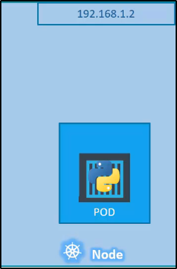

Networking in Kubernetes
Partiamo da un qualcosa di semplice.
Partiamo da un semplice nodo, con un indirizzo IP,
con un singolo POD.

NB: Se usi minikube, stiamo parlando dell'indirizzo IP della VM!
Qui l'esempio in caso di VM con IP separato dalla macchina Host.

Per essere più specifici ora: un Indirizzo IP è assegnato ad ogni singolo POD.

Ma come fanno i POD ad ottenere un loro indirizzo IP?
Quando Kubernetes è inizialmente configurato, crea una rete interna locale (privata)
con l'indirizzo di rete (nel nostro caso: 10.244.0.0)
Tutti i POD sono attaccati a questa rete.
Quando deploy altri POD, hanno un indirizzo IP differente, assegnato da questa rete.

I POD possono comunicare tramite questi IP, ma non è una buona idea:
questo perché gli indirizzi cambiano quando i POD sono ricreati!
E nel caso di più nodi in un cluster?
Nel nostro caso, differenti nodi hanno differenti indirizzi IP.
Ma la cosa "straordinaria" è che anche su nodi differenti,
i POD hanno indirizzi della stessa rete interna.
Questo è un problema: un POD potrebbe avere un IP
uguale ad un altro POD!
Quindi così non funziona.

Di base, Kubernetes non fa nessun setup per correggere questo "problema".
Kubernetes aspetta che siamo noi a configurare tutte queste cose.
Ecco i requisiti che Kubernetes si aspetta da noi:

Per fortuna, esistono delle soluzioni prebuilt come:- Cisco ACI Network
- Big Cloud Fabric
- Cilium
- Flannel
- VMWare NSX
- Calico
In base a dove deploy Kubernetes, puoi scegliere una di queste soluzioni.
Esempio:
Se stai creando un Kubernetes Cluster da scratch, puoi usare Calico, Flannel etc.
Se sei su un VM Enviroment, VMWare NSX può essere un ottima soluzione.
Il lab online del corso usa "Weave Net".

In questo modo, possiamo far connettere tutti con i criteri giusti!